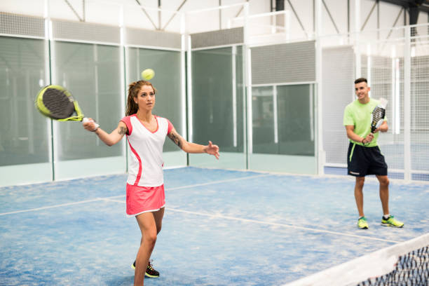

Voetbal is een wereldwijd populaire balsport waarbij twee ploegen van elf spelers moeten proberen de bal in het doel van de tegenstander te krijgen. De bal mag met ieder deel van het lichaam gespeeld worden, met uitzondering van armen en handen (behalve bij de inworp).
De wielersport is een verzamelnaam voor alle sporten waarbij gebruik wordt gemaakt van een fiets. Voor de fietssporten waarbij het op snelheid aankomt – en dat zijn de meeste – wordt ook de term wielrennen gebruikt. Er zijn verschillende takken binnen de wielersport. Binnen elke tak draagt de wereldkampioen op een bepaald onderdeel altijd de regenboogtrui. De Internationale Wielerunie (UCI) is de wereldwijde overkoepelende organisatie binnen de wielersport.
Padel is een racket- en balsport. Het wordt voornamelijk met vier spelers gespeeld, waarbij een bal, gelijkend op een tennisbal, met een racket over een net gespeeld dient te worden. Het lijkt een mix van tennis en squash. Bij padel moet de bal over het net op de speelhelft van de tegenstander(s) geslagen worden, zonder dat de bal eerst een van de wanden raakt. Het doel is om de tegenstander(s) te beletten de bal terug te slaan. De bal blijft echter in het spel als deze eerst de grond raakt en nadien een van de wanden. Dit zorgt voor langere rally's. Dit betekent ook dat tactiek belangrijker is dan kracht, aangezien de bal steeds kan terugkeren. De sport wordt zowel recreatief als competitief beoefend. Padelspelers zijn over het algemeen lid van een padelclub, die dan is aangesloten bij een padelfederatie. De wereldpadelbond is de FIP, Federación International de Padel.
